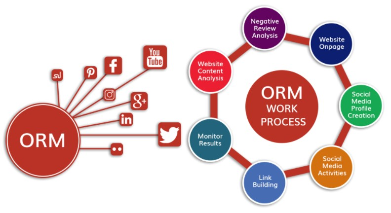

Digital Marketing Services

Digital marketing refers to the use of digital channels, platforms, and technologies to promote products, services, or brands to a target audience. It involves various online tactics and strategies to engage potential customers, boost brand awareness, and ultimately drive conversions. Unlike traditional marketing, digital marketing leverages tools like search engines, social media, email, and websites to reach a wide audience in a more measurable and cost-effective manner
Digital marketing also enables businesses to track user behavior, gather valuable data, and refine their marketing strategies in real-time. This makes it highly adaptable, allowing for more precise targeting and personalization of messages based on customer preferences and needs. With the growing importance of online presence, digital marketing is essential for businesses to remain competitive and reach customers where they spend most of their time—on digital devices and platforms. Moreover, it offers opportunities for both small and large companies to compete on a level playing field.
-
 Search Engine Optimization (SEO): SEO is a long-term digital marketing strategy aimed at improving a website's visibility on search engine results pages (SERPs) through organic (non-paid) means. It involves optimizing on-page elements such as meta tags, headers, content, and images, as well as off-page elements like backlinks. SEO also includes improving the website’s structure and loading speed to provide a better user experience. Effective SEO can lead to higher rankings, increased traffic, and enhanced credibility. As search engines continually update their algorithms, ongoing SEO efforts are necessary to maintain and improve rankings.
Search Engine Optimization (SEO): SEO is a long-term digital marketing strategy aimed at improving a website's visibility on search engine results pages (SERPs) through organic (non-paid) means. It involves optimizing on-page elements such as meta tags, headers, content, and images, as well as off-page elements like backlinks. SEO also includes improving the website’s structure and loading speed to provide a better user experience. Effective SEO can lead to higher rankings, increased traffic, and enhanced credibility. As search engines continually update their algorithms, ongoing SEO efforts are necessary to maintain and improve rankings. -
 Pay-Per-Click Advertising (PPC): PPC is a highly targeted form of advertising where businesses bid on specific keywords or audiences, and ads are displayed to users searching for those terms. Unlike organic traffic, PPC delivers instant results by driving immediate traffic to websites, making it an effective tool for generating leads or sales quickly. Advertisers can also set budgets and track performance in real-time, adjusting their campaigns for maximum effectiveness. PPC campaigns are commonly used on search engines like Google, social media platforms like Facebook, and even websites like YouTube. Properly managed PPC campaigns can deliver a high return on investment (ROI) by reaching the right audience at the right time.
Pay-Per-Click Advertising (PPC): PPC is a highly targeted form of advertising where businesses bid on specific keywords or audiences, and ads are displayed to users searching for those terms. Unlike organic traffic, PPC delivers instant results by driving immediate traffic to websites, making it an effective tool for generating leads or sales quickly. Advertisers can also set budgets and track performance in real-time, adjusting their campaigns for maximum effectiveness. PPC campaigns are commonly used on search engines like Google, social media platforms like Facebook, and even websites like YouTube. Properly managed PPC campaigns can deliver a high return on investment (ROI) by reaching the right audience at the right time. -
 Social Media Marketing: Social media marketing leverages platforms like Facebook, Instagram, Twitter, and LinkedIn to build a strong brand presence, foster customer relationships, and promote products or services. This strategy includes both organic efforts (such as posting engaging content and responding to followers) and paid advertising (such as boosting posts or creating targeted ads). Social media marketing is ideal for businesses aiming to interact with their audience directly, increase brand loyalty, and reach new customers through viral content. A well-executed social media strategy can humanize a brand, making it relatable and more approachable, while also providing valuable insights into consumer behavior and preferences.
Social Media Marketing: Social media marketing leverages platforms like Facebook, Instagram, Twitter, and LinkedIn to build a strong brand presence, foster customer relationships, and promote products or services. This strategy includes both organic efforts (such as posting engaging content and responding to followers) and paid advertising (such as boosting posts or creating targeted ads). Social media marketing is ideal for businesses aiming to interact with their audience directly, increase brand loyalty, and reach new customers through viral content. A well-executed social media strategy can humanize a brand, making it relatable and more approachable, while also providing valuable insights into consumer behavior and preferences. -
 Content Marketing: Content marketing focuses on delivering informative and valuable content that addresses the needs and pain points of a target audience. This can include blog posts, eBooks, videos, podcasts, infographics, and more. The goal is to establish the brand as an authority in its industry, which, in turn, builds trust with potential customers. Effective content marketing also plays a significant role in SEO, as well-crafted, keyword-optimized content can attract more traffic and improve search engine rankings. By consistently providing quality content, businesses can nurture leads, educate customers, and build long-lasting relationships that convert into sales over time.
Content Marketing: Content marketing focuses on delivering informative and valuable content that addresses the needs and pain points of a target audience. This can include blog posts, eBooks, videos, podcasts, infographics, and more. The goal is to establish the brand as an authority in its industry, which, in turn, builds trust with potential customers. Effective content marketing also plays a significant role in SEO, as well-crafted, keyword-optimized content can attract more traffic and improve search engine rankings. By consistently providing quality content, businesses can nurture leads, educate customers, and build long-lasting relationships that convert into sales over time. -
 Email Marketing: Email marketing remains one of the most cost-effective digital marketing channels, providing a direct line of communication between businesses and their customers. It allows businesses to segment their audience and send personalized, targeted messages that cater to the recipients' interests and behaviors. Whether used for promotional campaigns, newsletters, product launches, or follow-up emails, this strategy helps businesses stay top-of-mind. Email marketing also provides measurable results through open rates, click-through rates, and conversion tracking, making it easy to assess campaign effectiveness and optimize future efforts for better engagement and conversions.
Email Marketing: Email marketing remains one of the most cost-effective digital marketing channels, providing a direct line of communication between businesses and their customers. It allows businesses to segment their audience and send personalized, targeted messages that cater to the recipients' interests and behaviors. Whether used for promotional campaigns, newsletters, product launches, or follow-up emails, this strategy helps businesses stay top-of-mind. Email marketing also provides measurable results through open rates, click-through rates, and conversion tracking, making it easy to assess campaign effectiveness and optimize future efforts for better engagement and conversions. Web Design and Development: Web design and development are critical components of a business's online presence, ensuring that the website is not only aesthetically pleasing but also highly functional. Good web design focuses on user experience (UX), ensuring easy navigation, fast loading times, and mobile responsiveness. Development involves the technical side, ensuring that the website runs smoothly across all devices and browsers. A well-designed website can serve as a powerful tool to capture visitors’ attention, keep them engaged, and guide them through the sales funnel, ultimately leading to higher conversion rates. It also helps build credibility, as a professional-looking website instills confidence in potential customers.
Web Design and Development: Web design and development are critical components of a business's online presence, ensuring that the website is not only aesthetically pleasing but also highly functional. Good web design focuses on user experience (UX), ensuring easy navigation, fast loading times, and mobile responsiveness. Development involves the technical side, ensuring that the website runs smoothly across all devices and browsers. A well-designed website can serve as a powerful tool to capture visitors’ attention, keep them engaged, and guide them through the sales funnel, ultimately leading to higher conversion rates. It also helps build credibility, as a professional-looking website instills confidence in potential customers. Conversion Rate Optimization (CRO): CRO aims to increase the percentage of website visitors who take desired actions, such as making a purchase, signing up for a newsletter, or filling out a contact form. By analyzing user behavior through tools like heatmaps, A/B testing, and analytics, businesses can identify obstacles that prevent users from converting and make necessary adjustments. CRO may involve optimizing landing pages, improving website speed, streamlining checkout processes, or enhancing call-to-action buttons. Successful CRO efforts can lead to higher revenue and a better return on investment from existing traffic, without needing to spend more on attracting new visitors.
Conversion Rate Optimization (CRO): CRO aims to increase the percentage of website visitors who take desired actions, such as making a purchase, signing up for a newsletter, or filling out a contact form. By analyzing user behavior through tools like heatmaps, A/B testing, and analytics, businesses can identify obstacles that prevent users from converting and make necessary adjustments. CRO may involve optimizing landing pages, improving website speed, streamlining checkout processes, or enhancing call-to-action buttons. Successful CRO efforts can lead to higher revenue and a better return on investment from existing traffic, without needing to spend more on attracting new visitors.- 
Online Reputation Management (ORM): ORM involves the proactive monitoring and management of a brand's online reputation across various platforms, including review sites, social media, and forums. In today’s digital world, a single negative review or comment can significantly impact a business’s image. ORM strategies include encouraging satisfied customers to leave positive reviews, addressing negative feedback constructively, and engaging with customers to build a positive brand perception. By managing their reputation effectively, businesses can maintain customer trust, protect their brand’s image, and influence potential customers’ perceptions. ORM also helps mitigate the impact of negative content that could deter prospective clients.